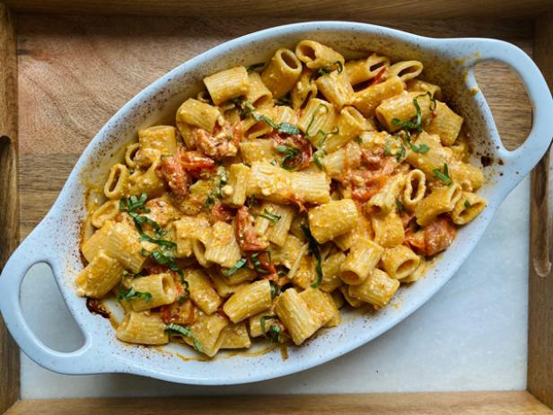

TikTik's Baked Feta Pasta Recipe

Ingredients
- 2 pints (20 ounces) cherry tomatoes
- 1/2 cup extra virgin olive oil
- Kosher salt and freshly ground black pepper
- One 8-ounce block feta cheese, drained
- 10 ounces mezze rigatoni
- 1 garlic clove, finely grated
- 1/4 cup fresh basil leaves, thinly sliced
- Flaky sea salt, for serving
Directions
- Preheat the oven to 400 degrees F.
- Toss the cherry tomatoes and olive oil with 1/4 teaspoon of salt and several grinds of black pepper in a medium bowl until combined.
- Pour into a 2 1/2 to 3-quart baking dish. Place the feta in the center of the tomatoes, then season with a pinch of black pepper.
- Bake until the tomatoes have burst and the feta has softened, about 30 minutes.
- Increase the heat to 450 degrees F, then continue to cook until the tomatoes and feta are golden brown, 10 to 15 minutes more.
- Meanwhile, bring a large pot of generously salted water to a boil over high heat.
- Add the pasta and cook until al dente, about 13 minutes.
- Reserve 1/2 cup of cooking water, then drain well.
- Right as the tomatoes and feta come out of the oven, stir in the garlic.
- Use the back of a spoon to smash the tomatoes and feta into a smooth and creamy sauce.
- Toss in the pasta and half of the basil until evenly coated.
- Add some pasta water, a couple tablespoons at a time, if the sauce becomes too thick.
- Taste and adjust the seasoning with salt and pepper. Top with the remaining basil and a pinch of flaky sea salt for serving.
View the original recipe from Food Network
Contact Me
shea.gerard@umontana.edu
32 Campus Dr,
Missoula, MT 59812